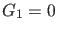
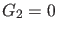
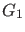
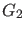
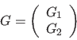
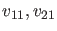
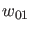
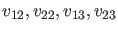
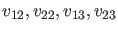

A BPC can be characterized by adding two extra constraints  and  to (47) where  and  are the Branch Point test functions. The complete BVP defining a BPC point using the minimal extended system is
where

is defined by requiring
Here  and
and  are functions, and are scalars and
are functions, and are scalars and
where the bordering operators , function , vector  and scalars
 and
and scalars
 and  are chosen so that
are chosen so that  is nonsingular [15][16].
is nonsingular [15][16].